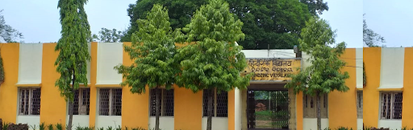

About School
About School
The Hindzinc Vidyalaya is an English Medium Secondary School affiliated With CBSE, New Delhi is situated at/po- Zinc Nagar (Sargipali), Dist- Sundargarh, Odisha. The School is managed by the new school management committee from the year, 2002. Prior to this period Hindusthan Zinc Company Ltd. Sargipali Mines had been managing the institute since 1979 to 2002
The school is full-fledged now with a number of 680 students upto class - X and 26 bonafide teachers are imparting their learnings to the taughts.
The infrastructure of the school building is well furnished with the water and electric supply for the toilet and laboratory facilities as well as fresh drinking water and eassy sitting of students in the class room.
Library, Science Labs. Computer class, PET apparatus blended together, extends the easy flow of teaching norms in the school. Never the less, it needs more to suffice the competative spirit of educative value around the periphery of the district, state and the country.